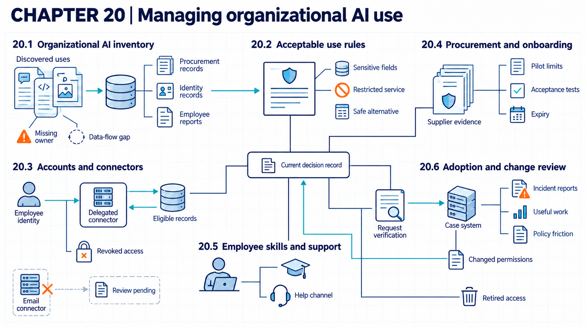

20 Shadow AI and unmanaged use
An organization-wide adoption process connects visible AI uses to acceptable-use rules, account and connector controls, and employee support.
Employees can start using AI tools before the organization reviews them. Shadow AI is AI use outside the organization’s approved review and management process. Staff paste work text into public chat services, suppliers switch on AI features inside products the organization already buys, and teams connect assistants to mailboxes or case systems. Each step can send data to a new supplier or give software new permissions that nobody approved. In one case reported by Bloomberg in May 2023, Samsung restricted staff use of generative AI tools after employees pasted confidential material into ChatGPT. Chapter 6 (Data leakage and privacy attacks) discusses that report and its limits.
Suppose an organization’s employees use an approved assistant, purchased software with AI features, and some services that nobody approved. The assistant’s approval covers its recorded task, data, permissions, and configuration. Every other service or embedded feature has its own task, data, connectors, actions, and supplier, and needs its own review record.

20.1 AI use inventory
Policy cannot govern an AI use that the organization cannot see. An enterprise AI inventory is a controlled record of AI systems and AI-enabled services used by the organization. It has to reach past standalone services, because an embedded AI feature is an AI capability included inside another purchased product.
The NIST Cybersecurity Framework (CSF) 2.01 separates inventories of software, services, supplier services, data, metadata, and authorized internal and external data flows. A data flow records movement of data among users, systems, suppliers, and stores. The AI Risk Management Framework2 also includes maintaining an inventory of AI systems according to organizational risk priorities. Neither framework shows that a given inventory is complete or current. That needs separate discovery evidence.
For each entry, the record links the business task, responsible owner, users, model or service, data types, connectors, data flows, action permissions, supplier, and review date. Discovery may combine procurement and identity records. Expense data, network observations, and employee reports add other views. These common practices cover only what the available evidence shows. The resulting population defines which uses the acceptable-use rules govern.
Example
Inventory trace. The example organization compares four discovery inputs for one month. Procurement lists an approved assistant. Identity logs show that same assistant and a second AI service. Expense records identify a third service, and an employee report identifies a fourth use, an AI feature inside a support product. The intermediate state is a reconciliation table with service identity, business task, data class, connector, responsible role, and review date. One expense entry has no responsible role, and one embedded feature has no data-flow record. The observed result is four candidate uses, two complete records, and two unresolved records. The inventory is a set of evidence-linked records with visible gaps, not a claim of completeness.
In this example, the inventory team repeats the reconciliation and marks incomplete entries for review. The onboarding workflow requires the task, data, connector, responsible role, and review date before enabling managed access. Its coverage measure is confirmed records divided by all candidate uses found through the stated inputs. High coverage across these inputs does not prove that every AI use has been found, because personal accounts and hidden product features can escape all of them. Discovery and reconciliation cost staff time. When a record stays unresolved, the organization suspends its connectors or routes the task to an approved service.
20.2 Acceptable-use rules
A general instruction to “use AI responsibly” does not tell an employee if a real task is allowed. An acceptable-use rule sets conditions on permitted AI tasks, data, outputs, or actions, so that a person or a software check can apply it to one request.
NIST3 recommends updating generative AI acceptable-use policies to cover proprietary and open-source technology and data, as well as contractors and other third parties. This is governance guidance, not a complete policy or evidence that publication alone changes behavior. Outputs that can materially affect a person, asset, obligation, or decision need review and action limits matched to those consequences. These output controls do not replace restrictions on sending confidential inputs to an unapproved service. A consequential output can materially affect a person, asset, obligation, or decision.
Example
Rule trace. Employee A12 in the example organization submits four separate requests. Through a managed request interface, they ask for a public policy summary, try to send customer record C44 to an unapproved service, request a contract clause, and ask to execute a refund payment. Before sending data, the interface checks the task, data class, target service, and requested action against the inventory and use rules. The public summary is allowed. A field filter blocks the customer paste and offers a safe alternative. A safe alternative is an approved method offered when the requested AI use is restricted. Here it is the restricted internal assistant. The contract clause is allowed only with a legal-review flag, and the payment execution is blocked. The rule becomes enforceable only when account and connector permissions match it.
The application and connector enforce the rule. They check the same fields plus the employee identity, then allow or block the request. Tests report blocked prohibited requests divided by all prohibited test requests, and blocked permitted requests divided by all permitted test requests. These tests cover managed channels only. Copying data through an unmanaged device, or a misclassified field, can get around the rule. Classification, support, and exception handling add cost and delay. After a bypass, recovery revokes exposed access and removes retained data where the service permits. Work then moves to the approved path.
20.3 Account and connector permissions
An approved service can still exceed policy if a broad connector or shared account bypasses individual access limits. A connector is an integration that lets an AI application read from or act on another system. The security question is which human or service identity each call uses. Its permission scope states the resources and operations allowed to that identity.
CSF 2.04 calls for identities and credentials for users, services, and hardware to be managed. It also calls for permissions and authorizations to be defined, enforced, reviewed, and limited through least privilege and separation of duties. These outcomes do not specify an identity product or prove that a connector applies the intended rule.
This identity chain applies from employee onboarding through offboarding. The application authenticates the employee, and the connector uses a distinct service identity or delegated token. The target service performs a current authorization check, and logs connect the request to both identities. Shared credentials break this chain. Review dates and revocation tests show whether access changes take effect, and procurement and onboarding can use their results as evidence.
Example
Revocation test. Employee E17 loses access to customer case C44 at 10:00. At 10:05 the employee submits a request for a C44 summary. The application has an earlier conversation, so the test checks cached text as well as new retrieval. It excludes C44 text from the model context and user response after checking current access. The connector sends E17’s identity to the case system, which denies the new request. In this invented test result, neither fresh nor cached C44 text reaches the response. If the connector had used a shared service account and returned the record, the test would show that approval of the AI service did not enforce the employee’s current permissions.
The case system enforces access from the current employee identity and record identifier. The connector passes the denial through and clears any queued result for that record. A full revocation test reports denied former permissions over all revoked user-resource pairs, plus the time from source revocation to effective denial. One successful pair, like the trace above, does not establish complete offboarding. Cached content, shared credentials, or a second connector can still bypass the path. Delegated identity and frequent checks add integration work and latency. If a bypass is found, recovery purges affected caches and revokes connector tokens, then retests the full revoked set.
20.4 Supplier onboarding and review
A supplier review has little value when it examines a brand while leaving the intended use, data, and actions unspecified. Supplier due diligence examines the supplier before a relationship begins.
NIST5 recommends procurement checks for intellectual property, privacy, security, embedded AI, ongoing monitoring, model and tool changes, and incident or vulnerability records. CSF 2.06 also calls for due diligence before a supplier relationship and continued recording, treatment, and monitoring of supplier risk. These lists do not certify a supplier or settle sector-specific contract duties.
The onboarding record ties the use case to permitted data, action limits, identity design, supplier evidence, acceptance tests, pilot expiry, and an accountable decision. A pilot limit is a temporary restriction on users, data, actions, duration, or scale during evaluation. Some requirements cannot be met at once. A time-limited exception is an approved deviation that expires or requires renewed review. Its record states why an ordinary requirement cannot yet be met and when the renewed review occurs. The people operating the approved use then need task-specific competence and a practical route for help.
Example
Onboarding trace. The review examines a help-desk assistant that will summarize policy and draft replies. It uses a supplier service with a read-only policy-store connector. The inputs are the use record with task, data types, connector and permission scope, supplier evidence, and required contract terms. The reviewer checks pilot limits for 80 users and 90 days, and acceptance tests for blocked customer fields and revocation. The pending data-processing addendum blocks customer-data use. The reviewer confirms that the existing terms permit the policy-only pilot. A separate, nonmandatory supplier reporting item receives a time-limited internal exception with a fixed review date. The exercise result is restricted approval for policy summaries, with the customer-field block and monthly review. The exception does not waive a legal or contractual prerequisite for processing customer data. The decision, responsible owner, and review date enter the inventory before the connector is enabled.
Approval control. A procurement reviewer checks the use record, supplier scope, required contract terms, pilot limits, test results, exception expiry, and decision authority, then approves, restricts, or postpones onboarding. The review reports complete approvals over all proposed uses and overdue exceptions over all active exceptions. Approval covers only the inspected service and period. A product update or an unreported subprocessor can make the evidence out of date after approval. Recovery then disables the feature or connector and returns users to the stated alternative while review is renewed. Supplier review and negotiation take legal and engineering time.
20.5 Human oversight
Employees meet the system at the point where an unreliable answer, suspicious instruction, or unexpected request becomes a business decision. Human oversight assigns review or intervention to a person with sufficient authority and support. Training needs to match the assigned task and the decisions the employee can make.
CSF 2.07 distinguishes general awareness from training for specialized roles, with both tied to the knowledge and skills needed to perform work while considering cybersecurity risk. For deployers of covered high-risk systems, EU AI Act Article 26(2)8 requires assignment of human oversight to people with the necessary competence, training, authority, and support. This is a duty attached to that legal role and system category. Under amended Article 113(c), the relevant Chapter III duties apply from December 2, 2027 for Article 6(2)/Annex III systems and August 2, 2028 for Article 6(1)/Annex I systems. The Act’s scope and Article 111 transition rules must also be checked. Chapter 21 explains these dates and their limits.
In the example organization, a customer-support employee may need to verify a refund instruction through the case system, while an administrator needs to inspect connector permissions and logs. Both need somewhere to turn. A help channel is a specified route for advice, reporting, or escalation. Questions and incident reports pass through it, so employees do not have to guess. Reports, repeated confusion, and support demand become evidence for adoption and change review.
Example
Competence check. The employee receives a synthetic message that asks for a refund and includes an assistant-generated bank-account change. The task is to decide what can proceed. The expected path ignores the generated payment instruction and verifies the case in the authoritative support system. The account change then goes to the established review channel. The exercise records the employee’s choice, the evidence consulted, and whether escalation occurred. A correct answer supports competence for this scenario only. It does not show readiness for administration, incident response, or legal review.
The business workflow requires the authoritative record and the specified approval role before a consequential change can proceed. The competence test reports correct decisions over all assigned scenarios and counts unsafe approvals and unnecessary escalations separately. Exercise scores come from calm, synthetic cases. In real work, time pressure, ambiguous cases, or an unavailable help channel can defeat the human step. Recovery stops the transaction and uses the ordinary manual process, and staff review any action already taken. Training, review, and support time are operating costs.
20.6 Adoption and change review
High use does not by itself show that adoption is safe or valuable. An adoption measure is a count or rate describing approved use of an AI capability.
CSF 2.09 calls for policy review when requirements, threats, technology, or mission change. It also calls for changes and exceptions to be assessed, recorded, and tracked. The framework does not define AI adoption measures or universal retirement thresholds. No source cited here validates measures that avoid rewarding unsafe volume or discouraging incident reporting.
The review keeps that limit visible. A rise in reports can reflect growing abuse or better awareness, and both causes may be present. Low use can reflect poor value or excessive friction. Policy friction is delay or work created by a policy during ordinary tasks. Incomplete discovery offers another explanation for low use. New model capabilities, contract terms, connectors, or data access can invalidate the original approval even when usage is stable. A retirement trigger is an observed condition that starts removal or replacement review. The resulting practice, exceptions, and open questions become inputs to the responsibility analysis in Chapter 21 (Responsibility and legal duties).
Example
Adoption review record. The example below uses invented values for one quarterly review.
| Record field | Pilot approval | Observed quarter | Review conclusion |
|---|---|---|---|
| Task | Summarize internal policy | 8,400 summaries requested | Task unchanged |
| Data | Public and internal policy | 23 requests included customer text | Retrain users and block customer fields |
| Accounts | 80 specified employees | 77 active users and 3 departed users revoked | Revocations recorded; effective denial still needs testing |
| Connectors | Read-only policy store | Supplier proposes email connector | New assessment required before connection |
| Support | Help channel and monthly review | 31 questions and 4 incident reports | Examine causes, do not treat report count alone as failure |
The reviewer compares observed use with the approved task, data, accounts, connectors, and support route. The conclusion is to continue the policy summary pilot with a block on customer fields and focused employee support. The proposed email connector remains outside approval because it changes available data and actions.
The application configuration enforces that decision. It checks the approved connector list and data rules before enabling a supplier feature. Before an approval is expanded, the review board checks new capabilities, terms, regions, permissions, and incident results. The measures are changed systems over all inventoried approved systems and policy violations over all inspected requests. Stable usage and answer quality can hide a changed boundary. Supplier-side activation or incomplete inventory data can also get past the check. Recovery disables the added capability, restores the accepted configuration, and moves work to the documented fallback. Review and field filtering add cost and user friction.
Note
Chapter checkpoint. Suppose a supplier update adds an email connector to an approved assistant that summarizes policy. Usage and answer quality remain unchanged. Can the existing approval continue without review?
Answer. No. The connector changes the data flow, possible content, and account permissions even though usage and answer quality did not change. The adoption record should mark the connector as outside the approved boundary and keep it disabled. The record must also identify the responsible role and tests required for a new decision.
Cherilyn Pascoe, Stephen Quinn, and Karen Scarfone, The NIST Cybersecurity Framework (CSF) 2.0, NIST CSWP 29 (2024), Appendix A (ID.AM series), printed p. 18. The cited entries are 02, 03, 04, and 07, source.↩︎
Elham Tabassi, Artificial Intelligence Risk Management Framework (AI RMF 1.0), NIST AI 100-1 (2023), Table 1, GOVERN 1.6, printed p. 23, source.↩︎
NIST, Artificial Intelligence Risk Management Framework: Generative Artificial Intelligence Profile, NIST AI 600-1 (2024), GOVERN 6.1, action GV-6.1-010, printed p. 21, source.↩︎
Cherilyn Pascoe, Stephen Quinn, and Karen Scarfone, The NIST Cybersecurity Framework (CSF) 2.0, NIST CSWP 29 (2024), Appendix A, PR.AA-01 and PR.AA-05, printed pp. 19–20, source.↩︎
NIST, Artificial Intelligence Risk Management Framework: Generative Artificial Intelligence Profile, NIST AI 600-1 (2024), GOVERN 6.1, action GV-6.1-009, printed p. 21, source.↩︎
Cherilyn Pascoe, Stephen Quinn, and Karen Scarfone, The NIST Cybersecurity Framework (CSF) 2.0, NIST CSWP 29 (2024), Appendix A, GV.SC-06 and GV.SC-07, printed p. 18, source.↩︎
Cherilyn Pascoe, Stephen Quinn, and Karen Scarfone, The NIST Cybersecurity Framework (CSF) 2.0, NIST CSWP 29 (2024), Appendix A, PR.AT-01 and PR.AT-02, printed p. 20, source.↩︎
European Parliament and Council, Regulation (EU) 2024/1689 (Artificial Intelligence Act), OJ L, 2024/1689 (July 12, 2024), consolidated text of July 27, 2026, Article 26(1)-(3), read with Articles 2, 6, 111, and 113, current text, as amended by Regulation (EU) 2026/1744, OJ L, 2026/1744 (July 24, 2026). The consolidation is a documentation tool. The published Official Journal acts control.↩︎
Cherilyn Pascoe, Stephen Quinn, and Karen Scarfone, The NIST Cybersecurity Framework (CSF) 2.0, NIST CSWP 29 (2024), Appendix A, GV.PO-02, printed p. 17, and ID.RA-07, p. 19, source.↩︎